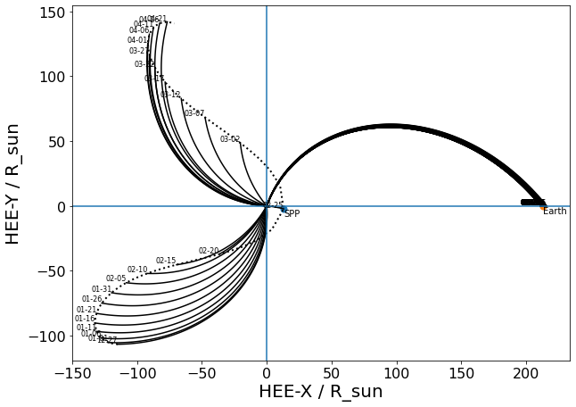

Updates
{kind=link}
PSP Encounter Infos
| Event | Distance | Time |
|---|---|---|
| E1 | 35.6 \(R_{\odot}\) | Perihelion: 2018-11-06 03:27 |
| E2 | 35.6 \(R_{\odot}\) | Perihelion: 2019-04-04 22:39 |
| E3 | 35.6 \(R_{\odot}\) | Perihelion: 2019-09-01 17:50 |
| E4 | 27.8 \(R_{\odot}\) | Perihelion: 2020-01-29 09:37 |
| E5 | 27.8 \(R_{\odot}\) | Perihelion: 2020-06-07 08:23 |
| E6 | 20.3 \(R_{\odot}\) | Perihelion: 2020-09-27 09:16 |
| E7 | 20.3 \(R_{\odot}\) | Perihelion: 2021-01-17 17:40 |
| E8 | 0.074 AU (15.9 \(R_{\odot}\)) | Perihelion: 2021-04-29 08:48 |
| E9 | 15.9 \(R_{\odot}\) | Perihelion: 2021-08-09 19:11 |
| E10 | 13.3 \(R_{\odot}\) | Perihelion: 2021-11-21 08:23 |
| E11 | 13.3 \(R_{\odot}\) | Perihelion: 2022-02-25 15:38 |
| E12 | 13.3 \(R_{\odot}\) | Perihelion: 2022-06-01 22:51 |
| E13 | 13.3 \(R_{\odot}\) | Perihelion: 2022-09-06 06:04 |
| E14 | 13.3 \(R_{\odot}\) | Perihelion: 2022-12-11 13:16 |
| E15 | 13.3 \(R_{\odot}\) | Perihelion: 2023-03-17 20:30 |
| E16 | 13.3 \(R_{\odot}\) | Perihelion: 2023-06-22 03:46 |
| E17 | 11.4 \(R_{\odot}\) | Perihelion: 2023-09-27 23:28 |
| E18 | 11.4 \(R_{\odot}\) | Perihelion: 2023-12-29 00:54 |
| E19 | 11.4 \(R_{\odot}\) | Perihelion: 2024-03-30 02:20 |
| E20 | 11.4 \(R_{\odot}\) | Perihelion: 2024-06-30 03:46 |
| E21 | 11.4 \(R_{\odot}\) | Perihelion: 2024-09-30 05:13 |
| E22 | 9.9 \(R_{\odot}\) | Perihelion: 2024-12-24 11:41 |
| E23 | 9.9 \(R_{\odot}\) | Perihelion: 2025-03-22 22:25 |
| E24 | 9.9 \(R_{\odot}\) | Perihelion: 2025-06-19 09:09 |
Using a nominal 400 km/s solar wind velocity, the following figures show the ballistic mapping in a helioprojective and heliographic frame, followed by an ecliptic view of the trajectory in the frame rotating with the Earth. Several Parker spirals are drawn, showing the possible magnetic connection to the Earth near May 9th.
Trange: Encounter 8
E8, C2, Q4, Q5, 24 April–1 May, 2021. Throughout this period SO will be in quadrature with Earth, appearing from Earth on the solar east limb. In rapid succession over E8, PSP will appear in quadrature from SO on the east limb (trailing), then in conjunction with SO at perihelion on 28 April, with PSP at a distance of 15.5RS, then in conjunction with STEREO-A on 29 April and with Earth on 30 April. STEREO-A will be positioned trailing Earth by 45◦ midway to SO in longitude. This PSP encounter is extremely favorable to a potential joint in situ–remote-sensing campaign comprising PSP, SO, STEREOA, SDO, Hinode, and ground-based instrumentation.
2021-05-09
05/09/2021
{kind=link}
{kind=link}
vap+cdaweb:ds=PSP_SWP_SPC_L3I&filter=psp&id=vp_moment_RTN[:,0];vp_moment_RTN[:,1];vp_moment_RTN[:,2]&timerange=2021-05-07+through+2021-05-08
|rebundle(vp_moment_R,vp_moment_T,vp_moment_N)|magnitude()
|rebundle(psp_fld_l2_mag_RTN_1min__0,psp_fld_l2_mag_RTN_1min__0,psp_fld_l2_mag_RTN_1min__0)|magnitude()
- ops: “|rebundle(vp_moment_R,vp_moment_T,vp_moment_N)|magnitude()” title: “PSP/SWP_SPC Proton bulk velocity from the 1st moment of the reduced distribution function in [inertial] RTN coordinate system (All Qualities)” y: label: V (km/s)
- ops: “|rebundle(B_R,B_T,B_N)|magnitude()” y: label: B (nT) title: PSP_FLD/MAG_RTN_1min Magnetic field in RTN coordinates (1 minute cadence)
PSP/PSP/SWEAP/SPAN Partial Moment Velocity in RTN Coordinates and Sun reference frame |rebundle(Vx RTN,Vy RTN,Vz RTN)|magnitude()
Wind or ACE
{kind=link}
{kind=link}


tr = ‘2021-05-06 22:46 to 2021-05-15 22:46’ vp = getDataSet( ‘vap+cdaweb:ds=PSP_SWP_SPC_L3I&filter=psp_SW&id=vp_moment_RTN’, tr ) plot( 0, vp )
density5min= getDataSet( ‘http://cdaweb.gsfc.nasa.gov/pub/data/ace/mag/level_2_cdaweb/mfi_k0/2017/ac_k0_mfi_20170117_v01.cdf?Magnitude’) dst60min= getDataSet( ‘http://cdaweb.gsfc.nasa.gov/pub/data/omni/omni_cdaweb/hourly/2017/omni2_h0_mrg1hr_20170101_v01.cdf?DST’)
t5min= density5min.property(QDataSet.DEPEND_0)
( density, flux, dst ) = synchronize( t5min, density5min, flux4min, dst60min, nn=1 ) # experimental function (note there is a built-in function in Autoplot v2017a. plot( 1, flux ) plot( 2, dst )
Trange
C4, 18 September, b 2021. This will be an inferior triple SO–PSP–STEREO-A conjunction, with SO inside the orbit of Venus around 0.6 AU, PSP at about 0.7 AU, and STEREO-A at 0.9 AU. This will be an occasion for joint in situ studies of the properties of turbulence and dynamics of a solar wind stream between 0.5 and 1 AU.
https://solar-mach.streamlit.app/?embedded=true&date=20210925&time=0000&coord_sys=0&plot_spirals=1&plot_sun_body_line=1&plot_trans=0&plot_markers=Numbers&long_offset=270&bodies=STEREO+A&bodies=Earth&bodies=BepiColombo&bodies=Parker+Solar+Probe&bodies=Solar+Orbiter&speeds=346&speeds=485&speeds=400&speeds=300&speeds=287&
{kind=link}
{kind=link}
{kind=link}
{kind=link}
{kind=link}


Trange: Encounter 11, 2022-02
E11, C6, Q8, Q9 23–27 February, 2022. PSP approaches encounter E11 beginning with a trailing quadrature Q8 on 23 February, 2022, appearing on the east limb of the Sun from SO, before rapidly going through conjunction with STEREO-A and then SO and Earth (24 and 25 February, respectively) at perihe- lion with the Earth–Sun–STEREO-A angle ’40◦ and the Earth–
{kind=link}
